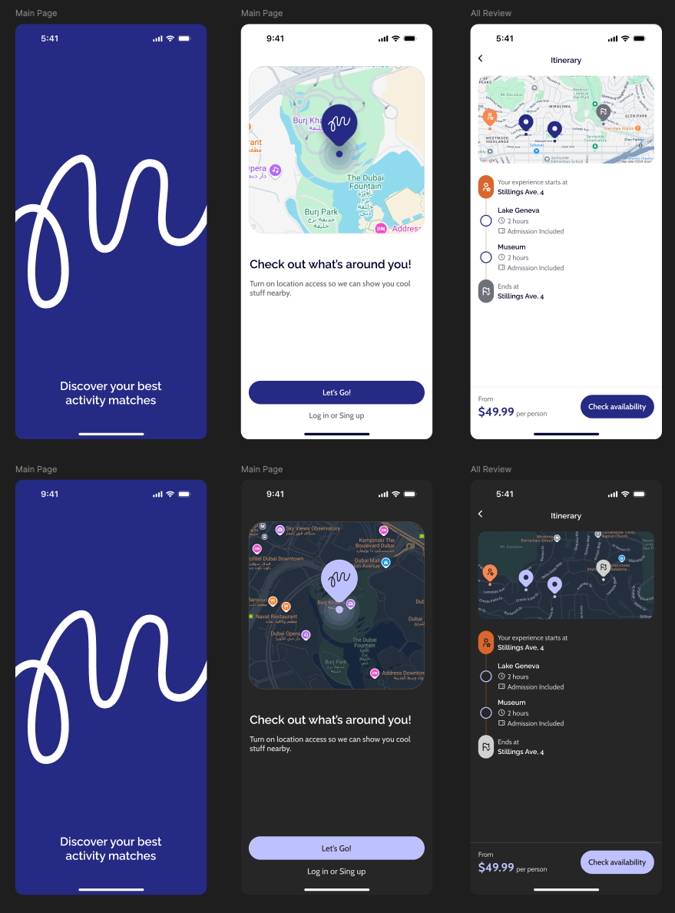

<!DOCTYPE html>
<html lang="en">
<head>
  <meta charset="UTF-8">
  <meta name="viewport" content="width=device-width, initial-scale=1.0">
  <title>Rethinking MPS Visual Identity</title>
  <script src="https://unpkg.com/lucide@latest"></script>
  <script src="https://cdn.tailwindcss.com"></script>
  <script src="https://unpkg.com/@lottiefiles/lottie-player@latest/dist/lottie-player.js"></script>
  <style>
    @import url('https://fonts.googleapis.com/css2?family=Plus+Jakarta+Sans:wght@400;500;600;700;800&display=swap');
    body { font-family: 'Plus Jakarta Sans', sans-serif; -webkit-tap-highlight-color: transparent; }
    .screen-img { border-radius: 12px; box-shadow: 0 25px 50px -12px rgba(0, 0, 0, 0.5); }
    .slide-container { overflow: hidden; }

  </style>
</head>
<body class="bg-gradient-to-br from-gray-950 via-gray-900 to-gray-950 text-white min-h-screen">
  <div id="app"></div>

  <script>
    const colors = {
      old: { primary: '#252A84', primaryLight: '#4960CE', violet: '#6559E8', lightGrey: '#F5F5F7' },
      rose: { 300: '#FDA4AF', 400: '#FB7185', 500: '#E11D48' },
      charcoal: { 500: '#4A4A4A', 700: '#2E2E2E' }
    };

    const slides = [
      { type: 'title' },
      { type: 'why' },
      { type: 'screens-before' },
      { type: 'hierarchy-before' },
      { type: 'psychology' },
      { type: 'usp' },
      { type: 'screens-after' },
      { type: 'hierarchy-after' },
      { type: 'comparison' },
      { type: 'conclusion' }
    ];

    let current = 0;
    let touchStartX = 0;

    const Logo = (color, size) => `
      <svg width="${size}" height="${size * 0.7}" viewBox="0 0 66 46" fill="none">
        <path stroke="${color}" stroke-linecap="round" stroke-width="${Math.max(2, size / 20)}"
          d="M2 24.07c4.6-10.106 12.568-11.596 16.585 0 2.719 9.577 1.814 18.157-2.72 19.696-10.82 3.67-4.341-36.928 7.773-41.917 8.422-3.468.843 25.024 7.71 25.98 7.32.821 5.053-25.98 13.864-24.943 8.81 1.037-2.138 20.796 6.802 22.87 8.94 2.072 12.763-19.372 12.763-19.372"/>
      </svg>`;

    const renderSlide = () => {
      const slide = slides[current];
      let content = '';

      if (slide.type === 'title') {
        content = `
          <div class="text-center px-4">
            <div class="flex justify-center gap-3 sm:gap-4 mb-6 sm:mb-8">
              <div class="w-12 h-12 sm:w-16 sm:h-16 rounded-xl sm:rounded-2xl flex items-center justify-center" style="background: ${colors.old.primary}">
                ${Logo('#fff', 32)}
              </div>
              <div class="w-0.5 sm:w-1 bg-gray-700 rounded-full"></div>
              <div class="w-12 h-12 sm:w-16 sm:h-16 rounded-xl sm:rounded-2xl flex items-center justify-center" style="background: ${colors.rose[500]}">
                ${Logo('#fff', 32)}
              </div>
            </div>
            <h1 class="text-2xl sm:text-4xl lg:text-5xl font-bold mb-3 sm:mb-4">Rethinking MPS Visual Identity</h1>
            <p class="text-base sm:text-xl mb-2" style="color: ${colors.rose[400]}">Why we're ditching blue</p>
            <p class="text-gray-400 text-sm sm:text-base">And betting on something bolder</p>
          </div>`;
      }

      if (slide.type === 'why') {
        content = `
          <div class="px-2 sm:px-0">
            <p class="text-xs sm:text-sm uppercase tracking-wider mb-2" style="color: ${colors.rose[400]}">The Problem</p>
            <h2 class="text-xl sm:text-3xl lg:text-4xl font-bold mb-4 sm:mb-8">Blue is everywhere. That's the problem.</h2>
            <div class="grid grid-cols-1 sm:grid-cols-3 gap-3 sm:gap-4">
              <div class="bg-indigo-950/50 border border-indigo-800 rounded-xl sm:rounded-2xl p-4 sm:p-5">
                <div class="w-8 h-8 sm:w-10 sm:h-10 rounded-lg sm:rounded-xl flex items-center justify-center mb-2 sm:mb-3" style="background: ${colors.old.primary}">
                  <i data-lucide="trending-up" class="w-4 h-4 sm:w-5 sm:h-5 text-white"></i>
                </div>
                <h3 class="font-semibold text-indigo-300 mb-1 sm:mb-2 text-sm sm:text-base">Where we are</h3>
                <p class="text-gray-400 text-xs sm:text-sm">Every travel app looks the same. Blue screams "safe." Safe doesn't get people to book.</p>
              </div>
              <div class="bg-gray-800/50 border border-gray-700 rounded-xl sm:rounded-2xl p-4 sm:p-5">
                <div class="w-8 h-8 sm:w-10 sm:h-10 bg-gray-600 rounded-lg sm:rounded-xl flex items-center justify-center mb-2 sm:mb-3">
                  <i data-lucide="refresh-cw" class="w-4 h-4 sm:w-5 sm:h-5 text-white"></i>
                </div>
                <h3 class="font-semibold text-gray-300 mb-1 sm:mb-2 text-sm sm:text-base">What we're doing</h3>
                <p class="text-gray-400 text-xs sm:text-sm">Rose + Charcoal. It's unexpected. It wakes people up instead of lulling them to sleep.</p>
              </div>
              <div class="rounded-xl sm:rounded-2xl p-4 sm:p-5" style="background: rgba(225, 29, 72, 0.1); border: 1px solid ${colors.rose[500]}40">
                <div class="w-8 h-8 sm:w-10 sm:h-10 rounded-lg sm:rounded-xl flex items-center justify-center mb-2 sm:mb-3" style="background: ${colors.rose[500]}">
                  <i data-lucide="target" class="w-4 h-4 sm:w-5 sm:h-5 text-white"></i>
                </div>
                <h3 class="font-semibold mb-1 sm:mb-2 text-sm sm:text-base" style="color: ${colors.rose[300]}">Why it matters</h3>
                <p class="text-gray-400 text-xs sm:text-sm">We want users who act, not users who browse. Color is the first lever.</p>
              </div>
            </div>
          </div>`;
      }

      if (slide.type === 'psychology') {
        content = `
          <div class="px-2 sm:px-0">
            <p class="text-xs sm:text-sm uppercase tracking-wider mb-2" style="color: ${colors.rose[400]}">The Research</p>
            <h2 class="text-xl sm:text-3xl lg:text-4xl font-bold mb-4 sm:mb-6">Red is the only color that triggers a physical response.</h2>
            <div class="grid grid-cols-1 lg:grid-cols-3 gap-3 sm:gap-4 mb-4 sm:mb-6">
              <div class="rounded-xl sm:rounded-2xl p-3 sm:p-4" style="background: rgba(225, 29, 72, 0.1); border: 1px solid ${colors.rose[500]}40">
                <div class="flex items-center gap-2 mb-2">
                  <i data-lucide="heart-pulse" class="w-4 h-4" style="color: ${colors.rose[500]}"></i>
                  <span class="text-xs sm:text-sm font-semibold" style="color: ${colors.rose[400]}">Physiological</span>
                </div>
                <p class="text-gray-300 text-xs sm:text-sm mb-2">Red increases <strong>blood pressure, respiratory rate, and eye blink frequency</strong> before your brain even processes what it's seeing.</p>
                <a href="https://www.scientificamerican.com/article/how-the-color-red-influences-our-behavior/" target="_blank" class="text-gray-500 text-xs italic hover:text-rose-400 transition-colors flex items-center gap-1">— Scientific American <i data-lucide="external-link" class="w-3 h-3"></i></a>
              </div>
              <div class="rounded-xl sm:rounded-2xl p-3 sm:p-4" style="background: rgba(225, 29, 72, 0.1); border: 1px solid ${colors.rose[500]}40">
                <div class="flex items-center gap-2 mb-2">
                  <i data-lucide="brain" class="w-4 h-4" style="color: ${colors.rose[500]}"></i>
                  <span class="text-xs sm:text-sm font-semibold" style="color: ${colors.rose[400]}">Neurological</span>
                </div>
                <p class="text-gray-300 text-xs sm:text-sm mb-2">20 years of research: red receives an <strong>"attentional advantage"</strong> in visual processing. Works best <strong>"when something is at stake."</strong></p>
                <a href="https://psycnet.apa.org/record/2007-01821-008" target="_blank" class="text-gray-500 text-xs italic hover:text-rose-400 transition-colors flex items-center gap-1">— Elliot & Maier, APA PsycNet <i data-lucide="external-link" class="w-3 h-3"></i></a>
              </div>
              <div class="rounded-xl sm:rounded-2xl p-3 sm:p-4" style="background: rgba(225, 29, 72, 0.1); border: 1px solid ${colors.rose[500]}40">
                <div class="flex items-center gap-2 mb-2">
                  <i data-lucide="mouse-pointer-click" class="w-4 h-4" style="color: ${colors.rose[500]}"></i>
                  <span class="text-xs sm:text-sm font-semibold" style="color: ${colors.rose[400]}">Behavioral</span>
                </div>
                <p class="text-gray-300 text-xs sm:text-sm mb-2">Red backgrounds increase <strong>willingness-to-pay</strong> and create urgency response — users act, don't just browse.</p>
                <a href="https://www.jstor.org/stable/10.1086/666466" target="_blank" class="text-gray-500 text-xs italic hover:text-rose-400 transition-colors flex items-center gap-1">— Journal of Consumer Research <i data-lucide="external-link" class="w-3 h-3"></i></a>
              </div>
            </div>
            <div class="bg-gray-800/50 rounded-xl sm:rounded-2xl p-3 sm:p-4 border border-gray-700">
              <p class="text-xs sm:text-sm font-semibold text-gray-300 mb-3">Proof that it works:</p>
              <div class="grid grid-cols-3 gap-2 sm:gap-4 text-center">
                <div class="rounded-lg p-2">
                  <div class="flex justify-center mb-1"></div>
                  <p class="text-xs sm:text-sm font-semibold" style="color: #FF6B6B">Tinder</p>
                  <p class="text-gray-500 text-xs">Red = swipe, hearts, "yes"</p>
                </div>
                <div class="rounded-lg p-2">
                  <div class="flex justify-center mb-1"></div>
                  <p class="text-xs sm:text-sm font-semibold text-[#E50914]">Netflix</p>
                  <p class="text-gray-500 text-xs">Red velvet seats → excitement</p>
                </div>
                <div class="rounded-lg p-2">
                  <div class="flex justify-center mb-1"></div>
                  <p class="text-xs sm:text-sm font-semibold text-[#FF5A5F]">Airbnb</p>
                  <p class="text-gray-500 text-xs">Blue → Coral for "belonging"</p>
                </div>
              </div>
            </div>
          </div>`;
      }

      if (slide.type === 'screens-before') {
        content = `
          <div class="px-2 sm:px-0">
            <p class="text-xs sm:text-sm uppercase tracking-wider mb-2" style="color: ${colors.old.primaryLight}">Before</p>
            <h2 class="text-xl sm:text-3xl font-bold mb-4 sm:mb-6">What we have now</h2>
            <div class="flex justify-center">
              
            </div>
            <p class="text-center text-gray-500 mt-3 sm:mt-4 text-xs sm:text-base">Looks like every other travel app. Forgettable.</p>
          </div>`;
      }

      if (slide.type === 'usp') {
        content = `
          <div class="px-2 sm:px-0">
            <p class="text-xs sm:text-sm uppercase tracking-wider mb-2" style="color: ${colors.rose[400]}">Our Differentiator</p>
            <h2 class="text-xl sm:text-3xl lg:text-4xl font-bold mb-4 sm:mb-8">Group Voting demands this color.</h2>
            <div class="grid grid-cols-1 sm:grid-cols-2 gap-4 sm:gap-6">
              <div class="rounded-xl sm:rounded-2xl p-4 sm:p-6" style="background: rgba(225, 29, 72, 0.1); border: 1px solid ${colors.rose[500]}60">
                <div class="flex items-center gap-2 sm:gap-3 mb-3 sm:mb-4">
                  <div class="w-10 h-10 sm:w-12 sm:h-12 rounded-lg sm:rounded-xl flex items-center justify-center" style="background: ${colors.rose[500]}">
                    <i data-lucide="vote" class="w-5 h-5 sm:w-6 sm:h-6 text-white"></i>
                  </div>
                  <h3 class="text-base sm:text-xl font-bold" style="color: ${colors.rose[400]}">Swipe to Vote</h3>
                </div>
                <p class="text-gray-300 text-xs sm:text-sm mb-3">Our killer feature: <strong>group trip planning through voting.</strong> Host creates a room, shares a code, everyone swipes on activities. AI builds the perfect itinerary.</p>
                <div class="flex gap-2 text-xs">
                  <span class="px-2 py-1 rounded-full bg-rose-500/20 text-rose-300">Tinder-style UX</span>
                  <span class="px-2 py-1 rounded-full bg-rose-500/20 text-rose-300">Real-time sync</span>
                </div>
              </div>
              <div class="bg-gray-800/50 rounded-xl sm:rounded-2xl p-4 sm:p-6 border border-gray-700">
                <h4 class="font-semibold text-gray-300 mb-3 text-sm sm:text-base">Why Rose is perfect for voting:</h4>
                <ul class="space-y-2 sm:space-y-3 text-gray-300 text-xs sm:text-sm">
                  <li class="flex items-start gap-2">
                    <i data-lucide="heart" class="w-4 h-4 flex-shrink-0 mt-0.5" style="color: ${colors.rose[500]}"></i>
                    <span><strong>Swipe = emotional.</strong> Red/rose is the color of Tinder, hearts, likes. Users already associate it with "yes."</span>
                  </li>
                  <li class="flex items-start gap-2">
                    <i data-lucide="timer" class="w-4 h-4 flex-shrink-0 mt-0.5" style="color: ${colors.rose[500]}"></i>
                    <span><strong>Voting needs urgency.</strong> Groups procrastinate. Rose says "decide now, not later."</span>
                  </li>
                  <li class="flex items-start gap-2">
                    <i data-lucide="users" class="w-4 h-4 flex-shrink-0 mt-0.5" style="color: ${colors.rose[500]}"></i>
                    <span><strong>Social features = warm colors.</strong> Blue is corporate. Rose is "let's do this together."</span>
                  </li>
                </ul>
              </div>
            </div>
            <div class="mt-4 sm:mt-6 rounded-xl sm:rounded-2xl p-3 sm:p-4 text-center bg-gray-800/50 border border-gray-700">
              <p class="text-gray-300 text-xs sm:text-base">Blue would make voting feel like a survey. Rose makes it feel like a <span style="color: ${colors.rose[400]}">game</span>.</p>
            </div>
          </div>`;
      }

      if (slide.type === 'screens-after') {
        content = `
          <div class="px-2 sm:px-0">
            <p class="text-xs sm:text-sm uppercase tracking-wider mb-2" style="color: ${colors.rose[400]}">After</p>
            <h2 class="text-xl sm:text-3xl font-bold mb-4 sm:mb-6">Where we're going</h2>
            <div class="flex justify-center">
              
            </div>
            <p class="text-center text-gray-500 mt-3 sm:mt-4 text-xs sm:text-base">You see that button? You want to tap it.</p>
          </div>`;
      }

      if (slide.type === 'hierarchy-before') {
        content = `
          <div class="px-2 sm:px-0">
            <p class="text-xs sm:text-sm uppercase tracking-wider mb-2" style="color: ${colors.old.primaryLight}">Current System</p>
            <h2 class="text-xl sm:text-3xl lg:text-4xl font-bold mb-4 sm:mb-8">One button for everything</h2>
            <div class="grid grid-cols-1 sm:grid-cols-2 gap-4 sm:gap-6">
              <div class="bg-indigo-950/30 rounded-xl sm:rounded-2xl p-4 sm:p-6 border border-indigo-900/50">
                <div class="flex flex-col gap-3 sm:gap-4 mb-3 sm:mb-4">
                  <button class="px-4 sm:px-6 py-2.5 sm:py-3 rounded-full font-semibold text-xs sm:text-sm text-white w-full" style="background: linear-gradient(90deg, ${colors.old.violet}, ${colors.old.primary}); box-shadow: 0 8px 16px ${colors.old.violet}30">Check availability</button>
                  <button class="px-4 sm:px-6 py-2.5 sm:py-3 rounded-full font-semibold text-xs sm:text-sm text-white w-full" style="background: linear-gradient(90deg, ${colors.old.violet}, ${colors.old.primary}); box-shadow: 0 8px 16px ${colors.old.violet}30">Let's Go!</button>
                  <button class="px-4 sm:px-6 py-2.5 sm:py-3 rounded-full font-semibold text-xs sm:text-sm text-white w-full" style="background: linear-gradient(90deg, ${colors.old.violet}, ${colors.old.primary}); box-shadow: 0 8px 16px ${colors.old.violet}30">Log in or Sign up</button>
                </div>
                <p class="text-gray-400 text-xs sm:text-sm">Same gradient CTA used <strong class="text-indigo-300">everywhere</strong>. Book a tour? Gradient. Log in? Gradient. Everything looks equally important.</p>
              </div>
              <div class="bg-indigo-950/30 rounded-xl sm:rounded-2xl p-4 sm:p-6 border border-indigo-900/50">
                <h4 class="font-semibold text-indigo-300 mb-3 text-sm sm:text-base">The problems:</h4>
                <ul class="space-y-2 sm:space-y-3 text-gray-300 text-xs sm:text-sm">
                  <li class="flex items-start gap-2">
                    <i data-lucide="x-circle" class="w-4 h-4 text-red-400 flex-shrink-0 mt-0.5"></i>
                    <span><strong>No secondary CTA.</strong> Every action competes for attention equally.</span>
                  </li>
                  <li class="flex items-start gap-2">
                    <i data-lucide="x-circle" class="w-4 h-4 text-red-400 flex-shrink-0 mt-0.5"></i>
                    <span><strong>No visual hierarchy.</strong> Users scan, get confused, bounce.</span>
                  </li>
                  <li class="flex items-start gap-2">
                    <i data-lucide="x-circle" class="w-4 h-4 text-red-400 flex-shrink-0 mt-0.5"></i>
                    <span><strong>Against industry standard.</strong> Airbnb, Uber, Booking.com all use distinct primary + secondary colors.</span>
                  </li>
                </ul>
              </div>
            </div>
            <div class="mt-4 sm:mt-6 rounded-xl sm:rounded-2xl p-3 sm:p-4 text-center bg-indigo-950/30 border border-indigo-900/50">
              <p class="text-indigo-300 text-xs sm:text-base">When everything is important, nothing is. Users don't know where to click.</p>
            </div>
          </div>`;
      }

      if (slide.type === 'hierarchy-after') {
        content = `
          <div class="px-2 sm:px-0">
            <p class="text-xs sm:text-sm uppercase tracking-wider mb-2" style="color: ${colors.rose[400]}">New System</p>
            <h2 class="text-xl sm:text-3xl lg:text-4xl font-bold mb-4 sm:mb-8">Clear hierarchy. Like the big players.</h2>
            <div class="grid grid-cols-1 sm:grid-cols-2 gap-4 sm:gap-6">
              <div class="bg-gray-800/50 rounded-xl sm:rounded-2xl p-4 sm:p-6 border border-gray-700">
                <div class="flex items-center gap-3 sm:gap-4 mb-3 sm:mb-4">
                  <button class="px-4 sm:px-6 py-2.5 sm:py-3 rounded-full font-semibold text-xs sm:text-sm text-white flex-shrink-0" style="background: ${colors.rose[500]}">Check availability</button>
                  <span class="font-medium text-sm sm:text-base" style="color: ${colors.rose[400]}">Primary CTA</span>
                </div>
                <p class="text-gray-400 text-xs sm:text-sm"><strong class="text-gray-200">Rose = money action.</strong> Book, buy, convert. Only ONE button type gets this color. Instant recognition.</p>
              </div>
              <div class="bg-gray-800/50 rounded-xl sm:rounded-2xl p-4 sm:p-6 border border-gray-700">
                <div class="flex items-center gap-3 sm:gap-4 mb-3 sm:mb-4">
                  <button class="px-4 sm:px-6 py-2.5 sm:py-3 rounded-lg font-semibold text-xs sm:text-sm text-white flex-shrink-0" style="background: ${colors.charcoal[700]}; border: 1px solid ${colors.charcoal[500]}">Log in</button>
                  <span class="text-gray-400 font-medium text-sm sm:text-base">Secondary CTA</span>
                </div>
                <p class="text-gray-400 text-xs sm:text-sm"><strong class="text-gray-200">Charcoal = everything else.</strong> Log in, settings, back. Visible but not competing. Users know it's secondary.</p>
              </div>
            </div>
            <div class="mt-4 sm:mt-6 rounded-xl sm:rounded-2xl p-3 sm:p-4" style="background: rgba(225, 29, 72, 0.1); border: 1px solid ${colors.rose[500]}40">
              <p class="text-xs sm:text-base text-center" style="color: ${colors.rose[300]}">Same pattern as Airbnb, Uber, Spotify. Primary color for conversions, neutral for the rest.</p>
            </div>
          </div>`;
      }

      if (slide.type === 'comparison') {
        const rows = [
          { f: 'User mindset', old: '"Research this"', new: '"Book this"' },
          { f: 'App vibe', old: 'Travel utility', new: 'Adventure starts here' },
          { f: 'Group planning', old: 'Browse alone', new: 'Swipe & vote together' },
          { f: 'In the market', old: 'Blends in', new: 'Stands out' },
          { f: 'Memory', old: '"What app?"', new: '"The pink one"' },
          { f: 'Conversion', old: 'Browse & leave', new: 'See, want, book' }
        ];
        content = `
          <div class="px-2 sm:px-0">
            <p class="text-xs sm:text-sm uppercase tracking-wider mb-2" style="color: ${colors.rose[400]}">The Payoff</p>
            <h2 class="text-xl sm:text-3xl lg:text-4xl font-bold mb-4 sm:mb-8">What actually changes</h2>
            <div class="bg-gray-800/50 rounded-xl sm:rounded-2xl overflow-hidden border border-gray-700 text-xs sm:text-base">
              <div class="grid grid-cols-3 bg-gray-800 p-2.5 sm:p-4">
                <span class="font-semibold"></span>
                <span class="font-semibold text-center" style="color: ${colors.old.primaryLight}">Blue</span>
                <span class="font-semibold text-center" style="color: ${colors.rose[400]}">Rose</span>
              </div>
              ${rows.map(row => `
                <div class="grid grid-cols-3 p-2.5 sm:p-4 border-t border-gray-700">
                  <span class="font-medium">${row.f}</span>
                  <span class="text-gray-500 text-center">${row.old}</span>
                  <span class="text-gray-200 text-center">${row.new}</span>
                </div>
              `).join('')}
            </div>
          </div>`;
      }

      if (slide.type === 'conclusion') {
        const phase1Items = [
          { title: 'New Assets', desc: 'Icons, splash screens, app icon', icon: 'palette' },
          { title: 'Mobile App', desc: 'Full redesign with new identity', icon: 'smartphone' },
          { title: 'Webapp v1', desc: 'Revive with single booking experience', icon: 'globe' },
          { title: 'Voting Webapp', desc: 'Redesign to match new system', icon: 'vote' }
        ];
        content = `
          <div class="flex flex-col lg:flex-row gap-6 lg:gap-10 items-center lg:items-start px-4">
            <div class="text-center lg:text-left lg:flex-1">
              <div class="w-14 h-14 sm:w-16 sm:h-16 rounded-2xl flex items-center justify-center mx-auto lg:mx-0 mb-4" style="background: ${colors.rose[500]}">
                ${Logo('#fff', 36)}
              </div>
              <h2 class="text-xl sm:text-2xl lg:text-3xl font-bold mb-3 sm:mb-4">This isn't a redesign.<br/>It's a repositioning.</h2>
              <div class="space-y-2 mb-4">
                <p class="text-sm sm:text-base text-gray-300">Blue says <span class="text-gray-400">"we're trustworthy"</span></p>
                <p class="text-sm sm:text-base text-gray-300">Rose says <span class="font-semibold" style="color: ${colors.rose[400]}">"Swipe Yes" · "Book Now" · "Let's Go"</span></p>
              </div>
              <p class="text-xs sm:text-sm text-gray-500 italic max-w-sm mx-auto lg:mx-0">"We're not here to help you find activities. We're here to get your group <span style="color: ${colors.rose[400]}">out the door—together</span>."</p>
            </div>
            <div class="lg:flex-1 w-full max-w-md">
              <p class="text-xs sm:text-sm uppercase tracking-wider mb-4 text-center lg:text-left" style="color: ${colors.rose[400]}">The Roadmap</p>
              
              
              <div class="relative flex gap-2 mb-3">
                <div class="flex-1">
                  ${phase1Items.map((item, i) => `
                    <div class="flex items-start gap-3 ${i < phase1Items.length - 1 ? 'pb-3 sm:pb-4' : ''}">
                      <div class="flex flex-col items-center">
                        <div class="w-7 h-7 sm:w-8 sm:h-8 rounded-full flex items-center justify-center flex-shrink-0 z-10" style="background: ${i === 0 ? colors.rose[500] : 'transparent'}; border: 2px solid ${colors.rose[500]}">
                          <i data-lucide="${item.icon}" class="w-3.5 h-3.5 sm:w-4 sm:h-4" style="color: ${i === 0 ? '#fff' : colors.rose[500]}"></i>
                        </div>
                        ${i < phase1Items.length - 1 ? `<div class="w-0.5 flex-1 min-h-[16px] sm:min-h-[20px]" style="background: linear-gradient(to bottom, ${colors.rose[500]}, ${colors.rose[500]}40)"></div>` : ''}
                      </div>
                      <div class="pt-0.5 sm:pt-1">
                        <p class="text-xs sm:text-sm font-semibold text-white">${item.title}</p>
                        <p class="text-xs text-gray-400">${item.desc}</p>
                      </div>
                    </div>
                  `).join('')}
                </div>
                
                <div class="flex items-center gap-1.5 sm:gap-2 flex-shrink-0">
                  <div class="h-full w-px sm:w-0.5 rounded-full" style="background: ${colors.rose[500]}40"></div>
                  <div class="flex flex-col items-center justify-center">
                    <span class="text-xs px-2 py-1 rounded-lg font-medium whitespace-nowrap" style="background: ${colors.rose[500]}20; color: ${colors.rose[400]}; border: 1px solid ${colors.rose[500]}40">2-3 weeks</span>
                  </div>
                </div>
              </div>
              
              
              <div class="relative flex gap-2 pt-2 border-t border-gray-700/50">
                <div class="flex-1">
                  <div class="flex items-start gap-3">
                    <div class="flex flex-col items-center">
                      <div class="w-7 h-7 sm:w-8 sm:h-8 rounded-full flex items-center justify-center flex-shrink-0 z-10 overflow-hidden" style="border: 2px solid ${colors.rose[500]}">
                        <lottie-player src="images/Cred tick animation.json" background="transparent" speed="1" style="width: 24px; height: 24px;" loop autoplay></lottie-player>
                      </div>
                    </div>
                    <div class="pt-0.5 sm:pt-1">
                      <p class="text-xs sm:text-sm font-semibold text-white">LottieFiles</p>
                      <p class="text-xs text-gray-400">Custom animations like Airbnb, Duolingo, Headspace</p>
                    </div>
                  </div>
                </div>
                
                <div class="flex items-center gap-1.5 sm:gap-2 flex-shrink-0">
                  <div class="h-full w-px sm:w-0.5 rounded-full opacity-0"></div>
                  <div class="flex flex-col items-center justify-center">
                    <span class="text-xs px-2 py-1 rounded-lg font-medium whitespace-nowrap" style="background: ${colors.rose[500]}20; color: ${colors.rose[400]}; border: 1px solid ${colors.rose[500]}40">+2 weeks</span>
                  </div>
                </div>
              </div>
              
            </div>
          </div>`;
      }

      const nav = `
        <div class="p-3 sm:p-4 flex items-center justify-between border-t border-gray-800">
          <button onclick="prev()" ${current === 0 ? 'disabled' : ''} class="flex items-center gap-1 sm:gap-2 px-2 sm:px-4 py-2 rounded-lg hover:bg-gray-800 disabled:opacity-30 transition-all">
            <i data-lucide="chevron-left" class="w-4 h-4 sm:w-5 sm:h-5"></i>
            <span class="text-xs sm:text-sm hidden sm:inline">Previous</span>
          </button>
          <div class="flex gap-1.5 sm:gap-2">
            ${slides.map((_, i) => `
              <button onclick="goTo(${i})" class="w-1.5 h-1.5 sm:w-2 sm:h-2 rounded-full transition-all ${i === current ? 'w-4 sm:w-6' : 'bg-gray-600 hover:bg-gray-500'}" ${i === current ? `style="background: ${colors.rose[500]}"` : ''}></button>
            `).join('')}
          </div>
          <button onclick="next()" ${current === slides.length - 1 ? 'disabled' : ''} class="flex items-center gap-1 sm:gap-2 px-2 sm:px-4 py-2 rounded-lg hover:bg-gray-800 disabled:opacity-30 transition-all">
            <span class="text-xs sm:text-sm hidden sm:inline">Next</span>
            <i data-lucide="chevron-right" class="w-4 h-4 sm:w-5 sm:h-5"></i>
          </button>
        </div>
        <div class="text-center pb-2 text-gray-600 text-xs">${current + 1} / ${slides.length}</div>`;

      document.getElementById('app').innerHTML = `
        <div class="min-h-screen flex flex-col">
          <div class="flex-1 p-4 sm:p-6 flex flex-col justify-center max-w-5xl mx-auto w-full slide-container">
            ${content}
          </div>
          ${nav}
        </div>`;
      
      lucide.createIcons();
    };

    const next = () => { if (current < slides.length - 1) { current++; renderSlide(); } };
    const prev = () => { if (current > 0) { current--; renderSlide(); } };
    const goTo = (i) => { current = i; renderSlide(); };

    // Keyboard navigation
    document.addEventListener('keydown', (e) => {
      if (e.key === 'ArrowRight' || e.key === ' ') next();
      if (e.key === 'ArrowLeft') prev();
    });

    // Touch/swipe navigation
    document.addEventListener('touchstart', (e) => {
      touchStartX = e.touches[0].clientX;
    }, { passive: true });

    document.addEventListener('touchend', (e) => {
      const touchEndX = e.changedTouches[0].clientX;
      const diff = touchStartX - touchEndX;
      if (Math.abs(diff) > 50) {
        if (diff > 0) next();
        else prev();
      }
    }, { passive: true });

    renderSlide();
  </script>
</body>
</html>
